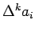
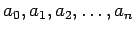

- 1. Arithmetische Reihe 1. Ordnung
- heißt die Reihe (1.54), wenn die Differenz von je zwei aufeinanderfolgenden Summanden konstant ist, d.h. wenn gilt:
Somit wird
mit dem Summenwert
- 2. Arithmetische Reihe k-ter Ordnung
- heißt eine Reihe, wenn die k-ten Differenzen  der Folge  konstant sind. Die Differenzen höherer Ordnung werden rekursiv durch
gebildet. Sie ergeben sich bequem aus dem folgenden Differenzenschema:
Es gilt dann für die Glieder und für die Summe